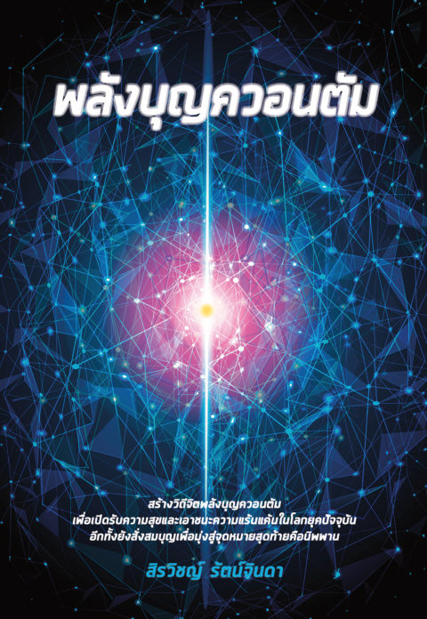

เปิด PDF ต้นฉบับเล่ม ๗ · คู่มือเดินทางแบบโต้ตอบ
พลังบุญควอนตัม
เล่มนี้นำแนวคิดฟิสิกส์ควอนตัม เช่น การประมวลผลของสมองแบบไม่อิงระยะทาง และหลักอนุรักษ์ข้อมูล มาเทียบเคียงกับเรื่องบุญ บาป และกฎแห่งกรรมในพุทธศาสนา ก่อนปิดท้ายด้วยการมองเส้นทางชีวิตผ่านแนวคิดอินทิกรัลเส้นทางของไฟน์แมน ว่าบุญบาปที่สั่งสมไว้มีน้ำหนักต่อความน่าจะเป็นของเส้นทางชีวิตอย่างไร
แนวคิดหลักสามข้อของเล่มนี้
สมองควอนตัม
สมองมนุษย์มีกระบวนการประมวลผลเชิงควอนตัมที่ไม่ขึ้นกับระยะทางหรือเวลา ซึ่งอาจเป็นฐานของจิตและการรับรู้
ข้อมูลไม่สูญ
หลักอนุรักษ์ข้อมูลในฟิสิกส์ควอนตัมถูกเทียบเคียงว่า ข้อมูลบุญและบาปของแต่ละคนก็ไม่มีวันสูญหายไปจากจักรวาล
เส้นทางกรรม
ชีวิตแต่ละคนมีเส้นทางที่เป็นไปได้มากมาย โดยบุญและบาปที่สั่งสมไว้เป็นน้ำหนักโน้มเอียงให้เดินไปในเส้นทางหนึ่งมากกว่าอีกทาง
เส้นทาง 10 บท · อ่านตามลำดับหรือข้ามไปบทที่สนใจก็ได้
๑สมการคลื่นของชเรอดิงเงอร์กับการประมวลผลควอนตัมของสมองสมองที่ประมวลผลข้ามระยะทาง ตามหลักคณิตศาสตร์ควอนตัมอ่านได้
๒การอนุรักษ์ข้อมูลควอนตัมเมื่อข้อมูลควอนตัมก๊อปไม่ได้ ลบไม่ได้ และซ่อนไม่มิดอ่านได้
๓ปริศนาข้อมูลหลุมดำเมื่อหลุมดำที่ดูเหมือนกลืนทุกอย่างจนไม่เหลือ กลับกลายเป็นเหตุผลที่หนักแน่นที่สุดว่าข้อมูลไม่มีวันสูญหายไปจากจักรวาลอ่านได้
๔ข้อมูลบุญ-บาปเชิงควอนตัมภายใต้สนามกฎแห่งกรรมสนามที่มองไม่เห็น แต่เก็บทุกความคิด คำพูด และการกระทำของคุณไว้ครบอ่านได้
๕พุทธพจน์เรื่องบุญ-บาป (1)คำตอบของพระพุทธองค์เอง ต่อคำถามที่ว่า "ทำดีได้ดี ทำชั่วได้ชั่ว" เป็นจริงแค่ไหนอ่านได้
๖พุทธพจน์เรื่องบุญ-บาป (2)เจตนาและเนื้อนาบุญ สองตัวแปรที่กำหนดน้ำหนักของบุญที่คุณสร้างขึ้นในแต่ละครั้งอ่านได้
๗พุทธพจน์เรื่องนรกพุทธพจน์ว่าด้วยคนพาลและทุกข์ในนรกที่เทียบกับทุกข์ใดไม่ได้ และข้ออนุมานของผู้เขียนว่านรกอาจเป็นภาวะจิตมากกว่าสถานที่ทางกายภาพอ่านได้
๘พุทธพจน์เรื่องสวรรค์เมื่อความสุขสามชั้นของคนดีเริ่มต้นตั้งแต่วันนี้ ไม่ต้องรอถึงชาติหน้าอ่านได้
๙ธรรมที่ทำให้ไปเกิดในสวรรค์หรือนรกเมื่อกรรมบถ 10 อย่างคูณด้วยสี่ระดับความพัวพัน กลายเป็นธรรม 40 ประการชุดเดียวที่ตัดสินทั้งใจวันนี้ ภพหน้า และป้ายว่าใครคือพาลหรือบัณฑิตอ่านได้
๑๐อินทิกรัลเส้นทางเชิงควอนตัมกับเส้นทางของชีวิตภายใต้บุญ บาป และกฎแห่งกรรมสูตรฟิสิกส์ที่ทรงพลังที่สุด กับคำตอบว่าทำไมบุญบาปเล็กๆ ที่สั่งสมทุกวัน ที่หนังสือเสนอว่าเอียงเส้นทางทั้งชีวิตได้อ่านได้
วิธีใช้คู่มือนี้
คำที่มีเส้นประสีทองข้างใต้ กดได้ทันที จะมีคำอธิบายภาษาคนธรรมดาขึ้นมาโดยไม่ต้องรอ · แต่ละบทมี "หน้าต่างสู่จักรวาล" สีน้ำเงินเข้มที่เลื่อนเล่นได้ เพราะเรื่องพวกนี้ต้องเห็นมันเคลื่อนไหวถึงจะเข้าใจ · สงสัยตรงไหน กดปุ่ม "ถามตรงนี้" มุมขวาล่าง ผู้ช่วยรู้เนื้อหาทั้งเล่มและจะบอกว่าเรื่องนั้นอยู่บทไหน
คำที่มีเส้นประสีทองข้างใต้ กดได้ทันที จะมีคำอธิบายภาษาคนธรรมดาขึ้นมาโดยไม่ต้องรอ · แต่ละบทมี "หน้าต่างสู่จักรวาล" สีน้ำเงินเข้มที่เลื่อนเล่นได้ เพราะเรื่องพวกนี้ต้องเห็นมันเคลื่อนไหวถึงจะเข้าใจ · สงสัยตรงไหน กดปุ่ม "ถามตรงนี้" มุมขวาล่าง ผู้ช่วยรู้เนื้อหาทั้งเล่มและจะบอกว่าเรื่องนั้นอยู่บทไหน